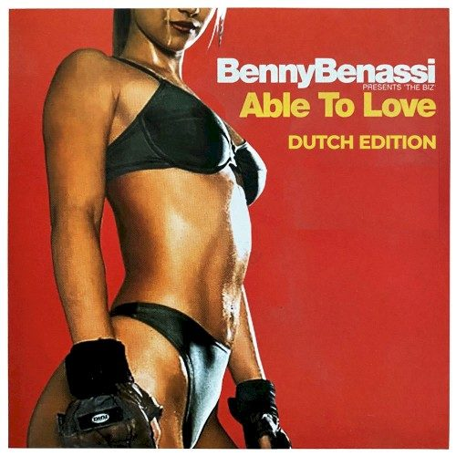

Benny Benassi presents The Biz - Able to Love


(Hussle Recordings/EMI)
Satisfaction was one of 2003’s biggest crossover dance tracks, heard frequently on the radio and all over the place for the last 12 months.
Featured on the now infamous Tooheys New commercial and chosen as the first track on Mark Dynamix’s Ministry of Sound Annual CD, Satisfaction was one of those songs that insidiously creeped its way into your head and wouldn’t let you go – and then totally annoyed the shit out of you after a while.
Able to Love is Benny Benassi’s new single, and unfortunately comes across as a pretty cynical attempt to cash in on the success of Satisfaction.
So who is Benny Benassi? According to the photo on the front of the single, a funny looking guy with boot-polished hair, horned-rim glasses, and who enjoys wearing a pair of incredibly retro looking headphones. And his new single, like Satisfaction, also features a robotic synthesised woman’s voice, repeating in this case a refrain of “Nobody’s business if I walk, talk, make love / seeing that I’m able to love.”
Once again comprised of a retro-electro sound taken straight from the 1980’s laid over a simple house beat, the riff is quite similar to Satisfaction as well. In fact, Able to Love sounds pretty damn similar to Satisfaction, and there’s not really much more to say about it.
Able to Love is a song that will probably be enjoyed by those that liked Satisfaction and not really anyone else unfortunately, unable to transcend the novelty appeal of the original tune. Failing to really break any new ground, Benny Benassi follows the trend created by dance producers like Darude and ATB by following up a hit single with a very similar sounding tune.
While not at all impressive, Able to Love isn’t really offensive either, and remains catchy enough. And for fans, the single also features a copy of the original Satisfaction.